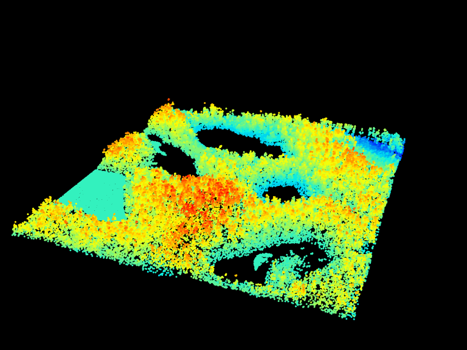
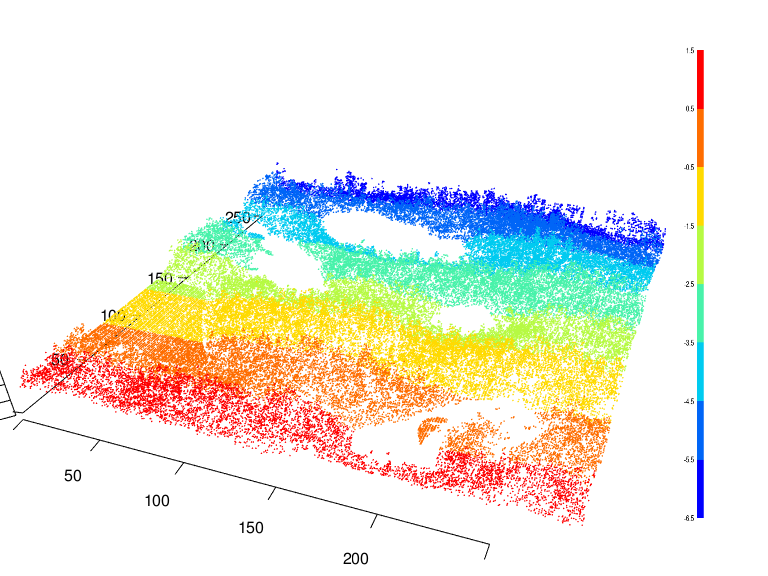
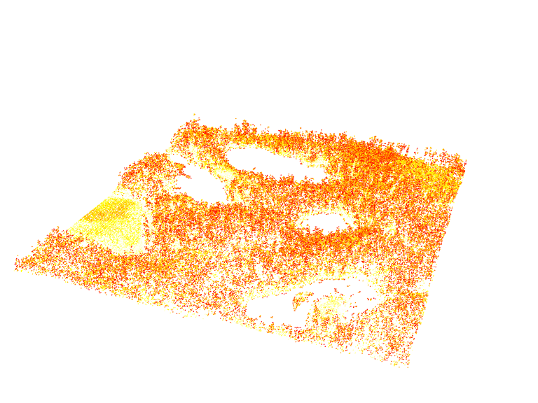
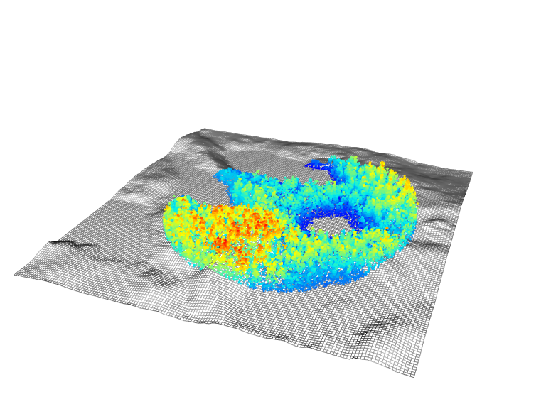
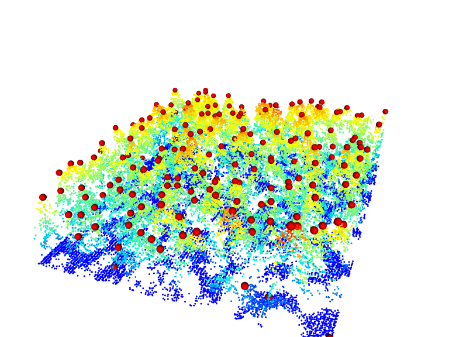
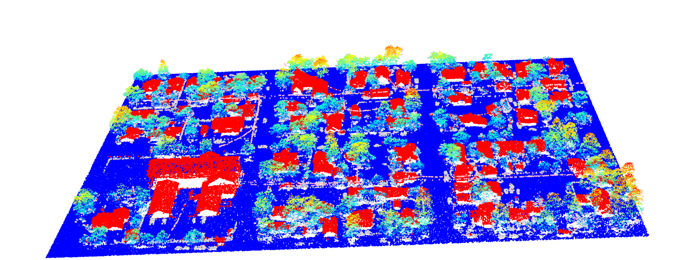
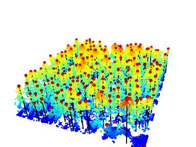
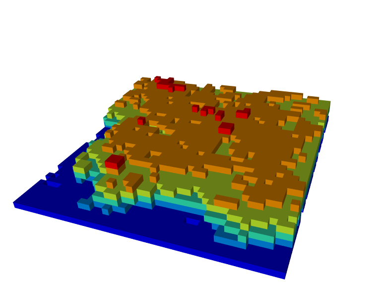
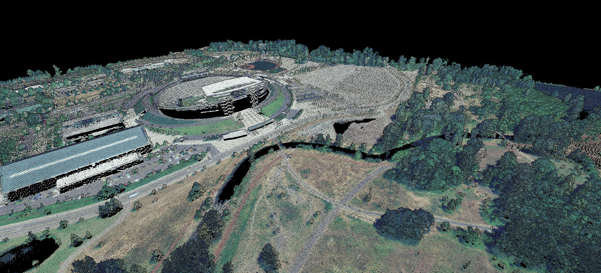
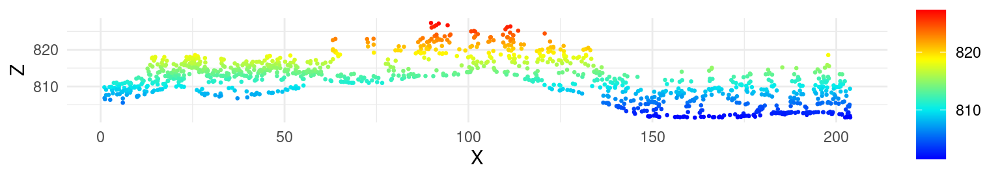

3 Plotting
The lidR package has two 3D rendering modes:
rglmode: This mode utilizes therglpackage to provide a versatile and interactive 3D viewer.rglis excellent for creating custom and publication-ready images, but it struggles to handle the visualization of massive point clouds.lidRviewermode: This mode relies on thelidRviewerpackage, which is designed to handle point clouds of arbitrary size in memory. It is more powerful and convenient for basic rendering tasks of large point cloud, but it is less versatile thanrgl.
3.1 3D Rendering with rgl
Basic 3D rendering
The very basic way to render a point cloud is the function plot().
plot(las)Users can change the attributes used for coloring by providing the name of the attribute used to colorize the points. The background color of the viewer can also be changed by assigning a color using the bg argument. Axes can also be added and point sizes can be changed.
# Plot las object by scan angle,
# make the background white,
# display XYZ axis and scale colors
plot(las, color = "ScanAngleRank", bg = "white", axis = TRUE, legend = TRUE)
Note that if your file contains RGB data the string "RGB" is supported:
plot(las, color = "RGB")The argument breaks enables to defined more adequate breaks in the color palette for example when intensity contains large outliers. Otherwise the palette range would be too large and most of the values would be considered as “very low”, so everything would appear in the same color.
plot(las, color = "Intensity", breaks = "quantile", bg = "white")
Overlays
The package also provides some easy to use functions for common overlay. For example add_dtm3d() to add a digital terrain model (section Chapter 5)) and add_treetops3d() to visualize the output of an individual tree detection (section Section 8.1))
x <- plot(las, bg = "white", size = 3)
add_dtm3d(x, dtm)
x <- plot(las, bg = "white", size = 3)
add_treetops3d(x, ttops)
It is also possible to combine two point clouds with different color palettes. In the following example we are using a previously classified point cloud. We first separate the vegetation and non vegetation points using filter_poi() and then plot both on top of each other with different colour schemes using add options in plot()
nonveg <- filter_poi(las, Classification != LASHIGHVEGETATION)
veg <- filter_poi(las, Classification == LASHIGHVEGETATION)
x <- plot(nonveg, color = "Classification", bg = "white", size = 3)
plot(veg, add = x)
Advanced 3D Rendering
Since lidR is based on rgl, it is easy to add objects to the main rendering using rgl functions such as rgl::point3d(), rgl::text(), rgl::surface3d(), and so on to produce publication-ready renderings. However, lidR introduces an additional challenge: it does not display the points with their actual coordinates. Instead, the points are shifted to be rendered close to (0, 0) due to accuracy issues, as rgl uses float (32-bit decimal numbers) rather than double (64-bit decimal numbers). When plot() is used, it invisibly returns the shift values, which can later be used to realign other objects.
offsets <- plot(las)
print(offsets)
#> [1] 391867.8 3901019.3The coordinates of the objects must be corrected to align with the point cloud. In the following we will add lines to render the trunks. We read a file, we locate the trees (see Section 8.1)), we extract the coordinates and sizes of the trees and plot lines with rgl::segment3d().
Show the code
LASfile <- system.file("extdata", "MixedConifer.laz", package="lidR")
las <- readLAS(LASfile, select = "xyzc")
# get the location of the trees
ttops <- locate_trees(las, lmf(ws = 5))
# plot the point cloud
offsets <- plot(las, bg = "white", size = 3)
add_treetops3d(offsets, ttops)
# extract the coordinates of the trees and
# apply the shift to display the lines
# in the rendering coordinate system
x <- sf::st_coordinates(ttops)[,1] - offsets[1]
y <- sf::st_coordinates(ttops)[,2] - offsets[2]
z <- ttops$Z
# Build a GL_LINES matrix for fast rendering
x <- rep(x, each = 2)
y <- rep(y, each = 2)
tmp <- numeric(2*length(z))
tmp[2*1:length(z)] <- z
z <- tmp
M <- cbind(x,y,z)
# Display lines
rgl::segments3d(M, col = "black", lwd = 2)
../../../../../../tmp/Rtmp8WxUoO/file23efd2b867b1c.png
Voxel rendering
It is possible to render voxels. This is useful to render the output of the function voxelise_points() or voxel_metrics() for examples.
vox <- voxelize_points(las, 6)
plot(vox, voxel = TRUE, bg = "white")
3.2 3D Rendering with lidRviewer
Installation
lidRviewer is not a package on CRAN. You can install it with:
install.packages('lidRviewer', repos = 'https://r-lidar.r-universe.dev')Usage
When loading lidRviewer with library(lidRviewer), it overrides the plot() function from lidR. You can now use:
plot(las)and get a powerful viewer with more command to interact and visualize the point cloud interactively.

You can:
- Rotate with the left mouse button.
- Zoom with the mouse wheel.
- Pan with the right mouse button.
- Colorize with RGB using keys r, g, or b (default if RGB is present).
- Colorize with Z using key z (default if no RGB is present).
- Colorize with Intensity using key i.
- Colorize with Classification using key c.
- Change the point size with + or -.
- Enable/disable eye-dome lighting with key l.
- Increase/decrease the point display budget with ctrl + wheel.
- Render hundreds of millions of points (if you have enough memory).
Actions 1, 2, and 3 were possible with rgl. Actions 4 to 8 were also possible with rgl, but they were cumbersome because you needed to rerun the plot function with a new argument each time. Actions 9 to 11 were entirely impossible with rgl.
Especially point 11: On my laptop (13th Gen Intel© Core™ i7-1355U), rgl handles up to a solid 10 million points but starts struggling beyond that. In contrast, lidRviewer has been tested with up to 200 million points on the same laptop without any issues and up to 800 millions point on a computer with more RAM.
Thus, lidRviewer should be preferred, right?
Drawbacks
To create this powerful viewer, we had to make some design choices that do not play well with how R internally works. Thus, lidRviewer has some limitations, which is why it is not on CRAN. In order to avoid creating a copy of the point cloud, which might be several GBs of memory, and to work with the raw memory already loaded, we have to:
- Block the R session when using
lidRviewer. Users can no longer work in R without closing the window first. - Limit rendering to 1 window, which is a direct effect of point 1.
Also lidRviewer is not intended to replace rgl. In lidR viewer you cannot draw/add/remove your own geometries. It is only a point cloud viewer.
3.3 2D Rendering with ggplot
To better visualize the vertical structure of a point cloud, investigate classification results, or compare the results of different interpolation routines, a cross section can be plotted. To do this, we first need to decide where the cross section will be located (i.e., define the beginning and end) and specify its width. The point cloud can then be clipped, and the X and Z coordinates used to create the plot.
For example, to create a 200 m long cross section, we might define the beginning and end, and then use the clip_transect() function to subset the point cloud.
p1 <- c(273457, 5274357)
p2 <- c(273542, 5274542)
las_tr <- clip_transect(las, p1, p2, width = 5, xz = TRUE)Rendering can be achieved with base plot or ggplot2. Notice the use of payload() to extract the data.frame from the LAS object.
library(ggplot2)
ggplot(payload(las_tr), aes(X,Z, color = Z)) +
geom_point(size = 0.5) +
coord_equal() +
theme_minimal() +
scale_color_gradientn(colours = height.colors(50))